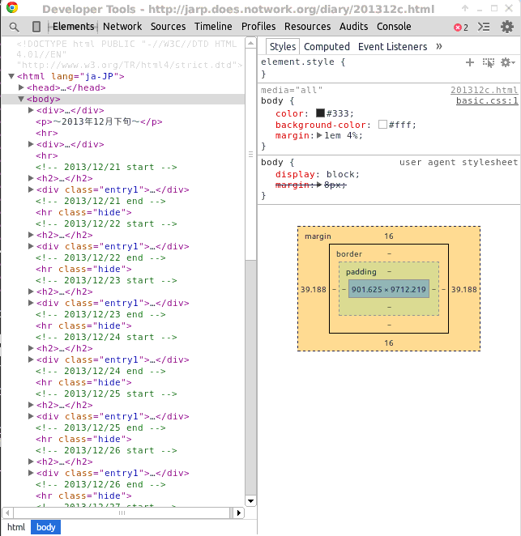

〜2014年1月中旬〜
Hototで逆三角形ボタンを押すと出てくるメニューの一番下に「後で読む」があるが、
これってURLが省略されてるとそのまま登録してしまって非常に残念なことになる。
たとえばt.coが展開されるまではいいが、その結果が長いと
http://www.tenki.jp/amedas/3/14/43241.html?rss20...
のように途中から省略されてしまう。
クリックすればリンク自体は展開結果そのものなのでブラウザへはちゃんとしたURLが伝達する。
実に悩ましい。いっそのことお気に入りのブラウザをPocketへ追加するスクリプトにしてしまうか。
だいたいPocket経由にしているし。
まずは
Pocket Authentication APIでconsumer keyとaccess tokenを獲得する。
登録したければcurlでconsumer keyとaccess tokenとURLを指定すればok。簡単だ。
% curl https://getpocket.com/v3/add \ -d consumer_key=XXXXX-XXXXXXXXXXXXXXXXXXXXXXXX \ -d access_token=XXXXXXXX-XXXX-XXXX-XXXX-XXXXXX \ -d url=http://jarp.does.notwork.org/diary/
結果はjsonで返ってくる。その結果を見ると短縮URLも展開していることがわかる。
結構気が利いている。
titleも指定できるが、取得できないときだけ使われる。
好きなようにタイトルをつけるには後からmodify APIを使うしかないか。
userscriptを拡張の画面にD&DすればTampermonkeyを使わなくてもいけるが、
userscriptを拡張にする方法を調べてみた。
まずは適当にディレクトリを作り、manifest.jsonを用意する。
manifest.jsonは最低manifest_version, name, versionあたりが必要。
javascriptを動かしたいときはcontent_scriptsで指定する。具体的には以下のように。
{
"manifest_version": 2,
"name": "Remove Tracker",
"version": "1.0",
"content_scripts": [
{
"matches": ["http://*/*?*", "https://*/*?*"],
"js": ["remove-tracker.js"]
}
]
}
matchesはまあ面倒なら"<all_urls>"でいいが、
tracker queryを削除するのが目的なので、?が含まれるURLにした。
Match Patternsを参照。
あとは使っていたuserscriptをそのままremove-tracker.jsという名前で置けばいい。
今回はこんな感じだ。
(function () {
var new_url = location.href.
replace(/[?&](from=tw|inb=tw|f=tgtn|rt=nocnt|tr=pc|ref=twitter|rss)\b/, '').
replace(/[?&]utm_\w+(?:=|%3D).+?(#|$)/ig, '$1'). // feedburner
replace(/[?&]cmp=dw.*/, ''); // ibm
if (new_url != location.href) {
location.replace(new_url)
}
})();
あとは「拡張機能」のページの一番先頭を見よう。
パッケージ化されてない拡張機能を読み込む...というボタンがある。
これを押して先程のディレクトリを開けばもういけてしまう。
変更したらリロード(Ctrl+R)をクリックで。
頻繁にいじるならD&Dするよりは楽かもしれない。
アイコンもつけられるし、最終的には本当の拡張にして公開することもできるし。
feh --bg-fillでいいじゃんと思ったら、なにか常駐しているようで勝手に元に戻されてしまう。
ぐぐってみるとxfconf-queryで設定するらしい。
% xfconf-query -c xfce4-desktop -p /backdrop/screen0/monitor0/image-path -s foo.jpg % xfconf-query -c xfce4-desktop -lv /backdrop/screen0/monitor0/image-path foo.jpg /backdrop/screen0/monitor0/image-show true /backdrop/screen0/monitor0/image-style 2 /backdrop/screen0/monitor0/last-image foo.jpg /backdrop/screen0/monitor0/last-image-list /home/eban/.config/xfce4/desktop/backdrop.list /backdrop/screen0/monitor0/last-single-image foo.jpg /desktop-icons/icon-size 32
-lvでいろいろ確認できる。
久し振りにCygwinでrubyをmakeしてたらなぜか意味不明なエラーになるので調べた。
% echo 'main(){}' > main.c
% gcc main.c
gcc: エラー: spawn: No such file or directory
-vつきで見てみるとどうもcc1が見つからないようで。
% gcc -print-prog-name=cc1 cc1
本来ならフルパスで表示されるはず。
Cygwinだとgcc.exeからの相対で探すはずなのでなにか変わったのかとwhich gccしてみたら、
/bin/gccと表示された。これか。
% /bin/gcc -print-prog-name=cc1 cc1 % /usr/bin/gcc -print-prog-name=cc1 /usr/libexec/gcc/x86_64-pc-cygwin/4.8.2/cc1.exe
Cygwinでは
% mount C:/cygwin64/bin on /usr/bin type ntfs (binary,auto) C:/cygwin64/lib on /usr/lib type ntfs (binary,auto) C:/cygwin64 on / type ntfs (binary,auto)
というようなmountになってるので、/usr/binと/binはまったく同じ物。
だったら/binだけあれば十分ということで/usr/binはPATHから消しちゃったんだよなあ。
以前はそれでもいけてたが、gccのディレクトリ構成が変わりlibexecになった影響で、
binやlibのようなmount小細工がないので見つからずエラーになってしまうと。
試しにsymlink張ってみるとちゃん見つかる。
% ln -s /usr/libexec / % /bin/gcc -print-prog-name=cc1 /bin/../libexec/gcc/x86_64-pc-cygwin/4.8.2/cc1.exe
というわけで、spawn: No such file or directoryのようなエラーが出たらPATHを確認すること。
おまけ: x86版の構成ではlibexecではなくlibのままなので問題ない。
% /bin/gcc -print-prog-name=cc1 /bin/../lib/gcc/i686-pc-cygwin/4.8.2/cc1.exe
いじれるのはChromeだけだけど、結構面白い。
inspectはまさに「要素の検証」がリモートでできる。
openもあるが、キー入力やマウスとか使えたら最高なんだが。

Tampermonkeyを使わなくなって困ったのは結局これだけだったようで。
Gmail Fixed Font for Greasemonkey
まあ、スタイルだけなので適当に
userstyles.orgに行ってgmail fixed fontで探して、
Gmail Fixed Width - Themes and Skins for Googleを入れた。
statコマンドを実行すると最後にBirthってのが出てくるがいつも空になっている。
% touch foo % stat foo File: `foo' Size: 0 Blocks: 0 IO Block: 4096 通常の空ファイル Device: 802h/2050d Inode: 31068073 Links: 1 Access: (0644/-rw-r--r--) Uid: ( 1000/ eban) Gid: ( 1000/ eban) Access: 2014-01-19 01:47:11.245973867 +0900 Modify: 2014-01-19 01:47:11.245973867 +0900 Change: 2014-01-19 01:47:11.245973867 +0900 Birth: -
どうもstat(2)じゃなくてxstat(2)を使わないとだめとかなんとかあるらしい。
むりやり知る方法も一応あって、debugfsを使う。
% sudo PAGER=cat debugfs /dev/sda2 debugfs 1.42.8 (20-Jun-2013) debugfs: pwd [pwd] INODE: 2 PATH: / [root] INODE: 2 PATH: / debugfs: cd /tmp debugfs: stat foo Inode: 31068073 Type: regular Mode: 0644 Flags: 0x80000 Generation: 4248328970 Version: 0x00000000:00000001 User: 1000 Group: 1000 Size: 0 File ACL: 0 Directory ACL: 0 Links: 1 Blockcount: 0 Fragment: Address: 0 Number: 0 Size: 0 ctime: 0x52dab154:2bb0e658 -- Sun Jan 19 01:52:36 2014 atime: 0x52dab154:2bb0e658 -- Sun Jan 19 01:52:36 2014 mtime: 0x52dab154:2bb0e658 -- Sun Jan 19 01:52:36 2014 crtime: 0x52dab00f:3aa50dac -- Sun Jan 19 01:47:11 2014 Size of extra inode fields: 28 EXTENTS: debugfs: quit % sudo PAGER=cat debugfs -R "stat /tmp/foo" /dev/sda2 debugfs 1.42.8 (20-Jun-2013) Inode: 31068073 Type: regular Mode: 0644 Flags: 0x80000 Generation: 4248328970 Version: 0x00000000:00000001 User: 1000 Group: 1000 Size: 0 File ACL: 0 Directory ACL: 0 Links: 1 Blockcount: 0 Fragment: Address: 0 Number: 0 Size: 0 ctime: 0x52dab154:2bb0e658 -- Sun Jan 19 01:52:36 2014 atime: 0x52dab154:2bb0e658 -- Sun Jan 19 01:52:36 2014 mtime: 0x52dab154:2bb0e658 -- Sun Jan 19 01:52:36 2014 crtime: 0x52dab00f:3aa50dac -- Sun Jan 19 01:47:11 2014 Size of extra inode fields: 28 EXTENTS:
crtimeがbirth timeでcreateってことだな。
なんか勝手にPAGERを立ち上げる変な仕様になってるが、
オプションで止めることはできないようで。
この日記は上旬、中旬、下旬でURLがa,b,cに分かれるようになっているが、
title tagを単純に取ってくるようなPocketだとちょっと気になる。
ブラウザならJavaScriptで小細工できるがまあ日記だしねえ。
それはそれとして個別の記事としても用意すればいいか。
nsmmだとちょっとできなさそうではあるので、後処理で。
svnのリポジトリが/varにあるもんだから、コミットできなくなっちゃうんだよねえ。
今回はapacheのログがいっぱいあったのでまとめて削除。
なぜか52個も残すようになっていたのでもっと妥当な数にした。
それでもsvn-rewrite_logってのが1個数GB食うのでもうログ吐くのをやめさせた。